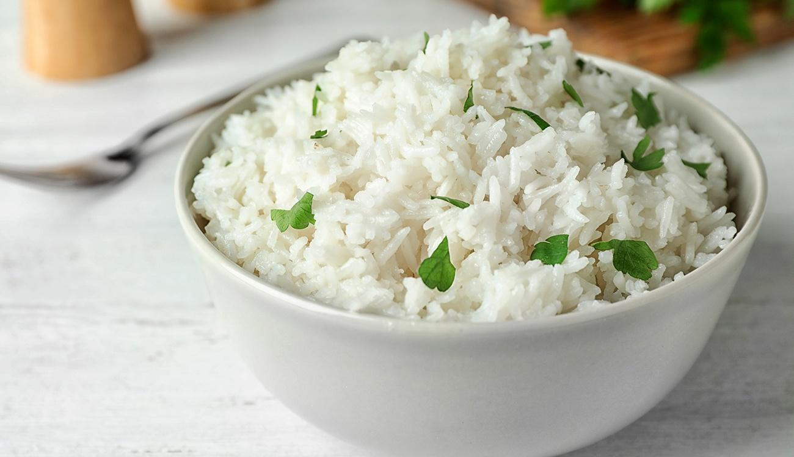

Web livro de receitas
Feijão

Ingredientes:
1 xícara (chá) de feijão-carioquinha cru (170 g)
1 sachê de tempero pronto
1 folha de louro
2 xícaras de água fervente
2 dentes de alho amassados
4 xícaras (chá) de água (800 ml
1 colher (chá) de sal
1 colher (sopa) de óleo
Modo de preparo (20 min):
- Refogue o alho e a cebola no azeite.
- Coloque o arroz e deixe fritar por cerca de 30 segundos.
- Adicione a água fervente e o sal.
- Abaixe o fogo e deixe cozinhar até a água quase secar
- Tampe a panela e aguarde cerca de 20 minutos antes de servir.
- Se desejar fazer mais, é só seguir as proporções, principalmente da água.
Sirva-se
Serve até 8 pessoas
Proxima pagina